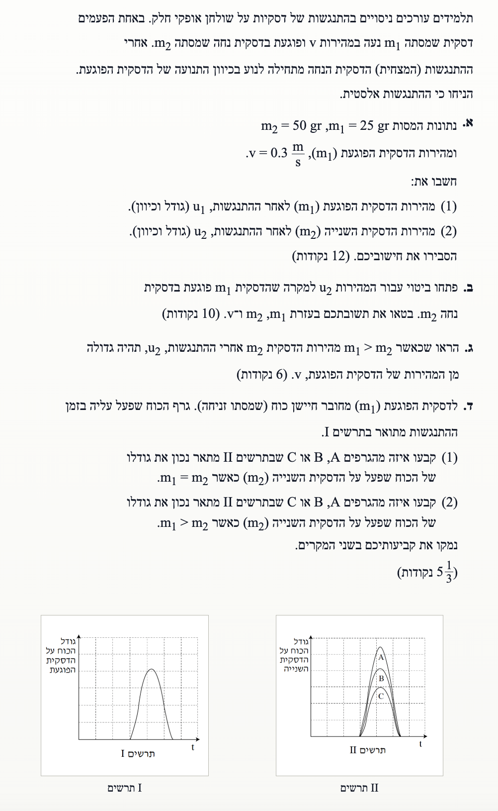
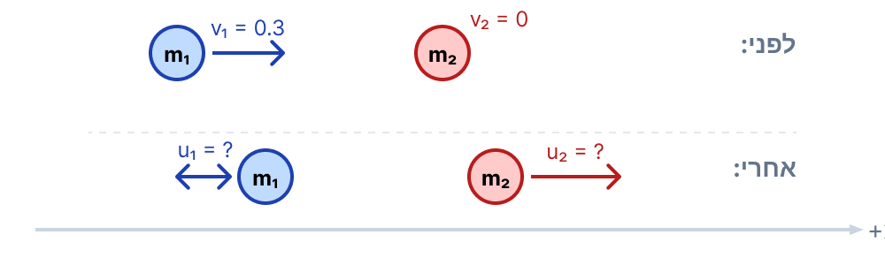
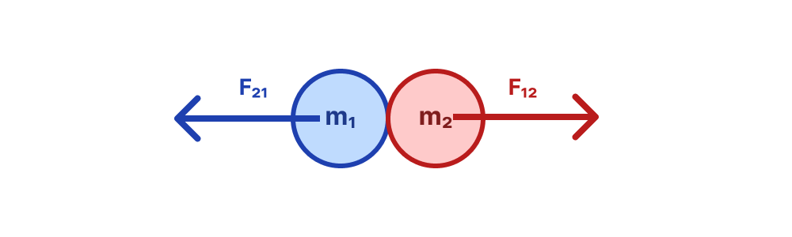

פתרון מלא: בגרות בפיזיקה - מכניקה
מכניקה 2010 שאלה 3
מתקף ותנע, התנגשות אלסטית וחוק שלישי של ניוטון
עודכן:
--- --:--:--

[תמונת השאלה המקורית]
לא נמצאה תמונה בשם question-image.png באותה תיקייה.
מה נתון:
נבצע המרת יחידות (MKS) למסות הנתונות בגרמים לקילוגרמים. כמו כן, נגדיר את ציר ה- \( x \) החיובי בכיוון תנועת הדסקית הפוגעת.
- מסת דסקית 1 (פוגעת): \( m_1 = 25 \text{ gr} = \frac{25}{1000} \text{ kg} = 0.025 \text{ kg} \)
- מסת דסקית 2 (נחה): \( m_2 = 50 \text{ gr} = \frac{50}{1000} \text{ kg} = 0.050 \text{ kg} \)
- מהירות דסקית 1 לפני ההתנגשות: \( v_1 = v = +0.3 \text{ m/s} \)
- מהירות דסקית 2 לפני ההתנגשות: \( v_2 = 0 \text{ m/s} \)
- סוג ההתנגשות: התנגשות אלסטית (מצחית).
מה מחפשים:
אנו מחפשים את המהירויות של שתי הדסקיות לאחר ההתנגשות (גודל וכיוון), כלומר את הערכים של \( u_1 \) ו- \( u_2 \).
תרשים תנועה - לפני ואחרי ההתנגשות (מבט על)

[תרשים סעיף א']
לא נמצאה תמונה בשם image-1.png באותה תיקייה.
נוסחאות ועקרונות בשימוש:
מכיוון שאין כוחות חיצוניים בציר האופקי, מתקיים חוק שימור התנע הקווי. כמו כן, נתון שההתנגשות אלסטית, ולכן נשתמש בנוסחת המהירויות היחסיות להתנגשות אלסטית (מתוך דף הנוסחאות):
\( m_A v_A + m_B v_B = m_A u_A + m_B u_B \)
\( v_A - v_B = -(u_A - u_B) \)
הצבה ופתרון:
נציב תחילה את הנתונים במשוואת שימור התנע:
\[ 0.025 \cdot 0.3 + 0.050 \cdot 0 = 0.025 \cdot u_1 + 0.050 \cdot u_2 \]
נחשב את האגף השמאלי ונקבל:
\[ 0.0075 = 0.025 u_1 + 0.050 u_2 \]
נחלק את שני אגפי המשוואה ב- \( 0.025 \) כדי לפשט:
\( \displaystyle 0.3 = u_1 + 2u_2 \)
--- (משוואה 1)
כעת נציב את הנתונים במשוואת ההתנגשות האלסטית:
\( \displaystyle 0.3 - 0 = -(u_1 - u_2) \)
\( \displaystyle 0.3 = u_2 - u_1 \)
--- (משוואה 2)
נחבר את משוואה 1 ומשוואה 2 (פעולה שמבטלת את \( u_1 \)):
\[ 0.3 + 0.3 = (u_1 + 2u_2) + (u_2 - u_1) \]
\[ 0.6 = 3u_2 \]
\[ u_2 = 0.200 \text{ m/s} \]
נציב את \( u_2 \) חזרה במשוואה 2 כדי למצוא את \( u_1 \):
\[ 0.3 = 0.200 - u_1 \]
\[ u_1 = 0.200 - 0.3 = -0.100 \text{ m/s} \]
קיבלנו עבור \( u_1 \) ערך שלילי. המשמעות היא שכיוון תנועתה מנוגד לכיוון הציר שבחרנו (כלומר, מנוגד לכיוון התנועה המקורי של דסקית 1).
(1) מהירות הדסקית הפוגעת: גודל \( 0.100 \text{ m/s} \), כיוון - מנוגד לכיוונה ההתחלתי (שמאלה).
(2) מהירות הדסקית השנייה: גודל \( 0.200 \text{ m/s} \), כיוון - ככיוון התנועה ההתחלתי (ימינה).
טיפ מורה:
שימו לב! כאשר פותרים שתי משוואות בשני נעלמים (כמו בבעיות של התנגשות אלסטית), דרך העבודה ה"רגילה" של בידוד משתנה ממשוואה אחת והצבתו במשוואה השנייה בהחלט תעבוד ותוביל אתכם לתשובה הנכונה. יחד עם זאת, לפני שאתם מתחילים מיד בפתרון הארוך, עצרו לרגע והביטו על מערכת המשוואות. נסו לחפש "קיצורי דרך" אלגבריים. פעמים רבות תגלו שפעולה פשוטה כמו חיבור המשוואות זו לזו (כפי שעשינו כאן וביטלנו בקלות את \( u_1 \)), חיסור ביניהן, ולעיתים אף חלוקה של משוואה אחת בשנייה, תחסוך לכם זמן יקר, תפשט את האלגברה ותקטין משמעותית את הסיכוי לטעויות חישוב!
מה נתון:
אנו משתמשים באותם תנאים התחלתיים, אך כעת ללא מספרים, אלא באמצעות פרמטרים:
- מסות: \( m_1, m_2 \)
- מהירויות התחלתיות: \( v_1 = v \), \( v_2 = 0 \)
- התנגשות אלסטית.
מה מחפשים:
לפתח ביטוי עבור המהירות \( u_2 \) בעזרת הפרמטרים הנתונים: \( m_1, m_2, v \).
נוסחאות ועקרונות בשימוש:
\( m_A v_A + m_B v_B = m_A u_A + m_B u_B \)
\( v_A - v_B = -(u_A - u_B) \)
הצבה ופתרון:
נרשום את שתי המשוואות בפרמטרים:
\( \displaystyle m_1 v + m_2 \cdot 0 = m_1 u_1 + m_2 u_2 \)
\( \displaystyle m_1 v = m_1 u_1 + m_2 u_2 \)
--- (משוואת תנע)
\( \displaystyle v - 0 = -(u_1 - u_2) \)
\( \displaystyle v = u_2 - u_1 \implies u_1 = u_2 - v \)
--- (משוואה אלסטית)
נציב את הביטוי שקיבלנו עבור \( u_1 \) לתוך משוואת שימור התנע:
\[ m_1 v = m_1 (u_2 - v) + m_2 u_2 \]
נפתח סוגריים ונעביר אגפים:
\[ m_1 v = m_1 u_2 - m_1 v + m_2 u_2 \]
\[ 2 m_1 v = m_1 u_2 + m_2 u_2 \]
נוציא גורם משותף \( u_2 \) באגף ימין:
\[ 2 m_1 v = u_2 (m_1 + m_2) \]
נחלק בביטוי שבסוגריים (שסכומו בהכרח שונה מאפס כי המסות חיוביות):
\[ u_2 = \frac{2 m_1}{m_1 + m_2} v \]
טיפ מורה:
זוהי נוסחה כללית חשובה שבעזרתה ניתן לנתח בקלות מקרי קצה נפוצים מאוד בשאלות בגרות:
- מסות שוות (\( m_1 = m_2 \)): אם נציב זאת בנוסחה, נקבל \( u_2 = \frac{2m_1}{2m_1}v = v \). המשמעות היא שהגוף הפוגע יעצר לחלוטין ויעביר את כל מהירותו ההתחלתית לגוף הנח. זוהי בדיוק ההתנהגות שאנו מכירים ממשחק כדורי ביליארד!
- גוף קל פוגע בגוף מאסיבי נח (\( m_1 \ll m_2 \)): במצב זה (כמו כדור פינג-פונג שפוגע בכדור באולינג), המכנה גדול מאוד ולכן המהירות \( u_2 \) שואפת ל- \( 0 \). הגוף הכבד כמעט ולא יזוז, ואילו הגוף הקל יירתע לאחור בכיוון הפוך ובאותו גודל מהירות.
מה נתון:
נתון תנאי חדש למערכת הכללית: מסת הדסקית הפוגעת גדולה ממסת הדסקית הנחה, כלומר \( m_1 > m_2 \).
מה מחפשים:
להראות מתמטית כי תחת התנאי הנ"ל, המהירות \( u_2 \) שתתקבל תהיה בהכרח גדולה מ- \( v \) (המהירות המקורית של הדסקית הפוגעת).
נוסחאות ועקרונות בשימוש:
נשתמש בביטוי שפיתחנו בסעיף ב' עבור \( u_2 \):
\( u_2 = \left( \frac{2 m_1}{m_1 + m_2} \right) v \)
הצבה ופתרון:
נתחיל מאי השוויון הנתון:
\[ m_1 > m_2 \]
נוסיף לשני אגפי אי-השוויון את הגודל \( m_1 \) (פעולה חוקית שאינה משנה את כיוון אי-השוויון):
\[ m_1 + m_1 > m_1 + m_2 \]
\[ 2 m_1 > m_1 + m_2 \]
מכיוון שמסות הן תמיד גדלים חיוביים ( \( m_1 + m_2 > 0 \) ), ניתן לחלק את שני אגפי אי-השוויון בביטוי \( m_1 + m_2 \) מבלי להפוך את סימן אי-השוויון:
\[ \frac{2 m_1}{m_1 + m_2} > 1 \]
כעת, נכפול את שני האגפים במהירות \( v \). מכיוון ש- \( v \) חיובי בהגדרתו כגודל תנועה ימינה, כיוון אי-השוויון נשמר:
\[ \left( \frac{2 m_1}{m_1 + m_2} \right) v > 1 \cdot v \]
נציב חזרה את הגדרת \( u_2 \) באגף השמאלי, ונקבל את המבוקש:
\[ u_2 > v \]
מ.ש.ל
טיפ מורה:
הוכחות מתמטיות בפיזיקה דורשות תמיד בנייה צעד אחר צעד על בסיס הנחות מוצקות (כמו מסה חיובית). זכרו שכאשר כופלים או מחלקים אי-שוויון בפרמטר, חובה לוודא את הסימן שלו (חיובי או שלילי) כדי לדעת אם להפוך את סימן אי-השוויון!
מה נתון:
נתון גרף I המתאר את גודל הכוח הפועל על הדסקית הפוגעת (\( m_1 \)) כפונקציה של הזמן במהלך ההתנגשות. עלינו לבחון שני מקרים שונים של יחסי מסות: \( m_1 = m_2 \) ו- \( m_1 > m_2 \).
מה מחפשים:
לקבוע איזה מבין הגרפים (A, B, C) בתרשים II מתאר נכונה את גודל הכוח שפועל על הדסקית השנייה (\( m_2 \)) בכל אחד משני המקרים.
תרשים כוחות (מבט על) בזמן ההתנגשות עצמה

[תרשים סעיף ד']
לא נמצאה תמונה בשם image-4.png באותה תיקייה.
הערה: כוח הכובד והכוח הנורמלי מאוזנים בציר האנכי, ולכן לא שורטטו במבט על.
נוסחאות ועקרונות בשימוש:
כאשר שני גופים נמצאים באינטראקציה, החוק השולט על הכוחות הפנימיים ביניהם הוא החוק השלישי של ניוטון (חוק הפעולה והתגובה):
\( \vec{F}_{12} = -\vec{F}_{21} \implies |\vec{F}_{12}| = |\vec{F}_{21}| \)
הצבה ופתרון:
על פי החוק השלישי של ניוטון, הכוח שגוף 1 מפעיל על גוף 2 שווה בדיוק בגודלו (והפוך בכיוונו) לכוח שגוף 2 מפעיל על גוף 1 בכל רגע ורגע במהלך האינטראקציה.
חוק זה הוא אוניברסלי ואינו תלוי כלל במסות של הגופים!
מכיוון שהצירים האנכיים בתרשימים I ו-II מתארים את גודל הכוח, הערך המוחלט של הכוח חייב להיות זהה בשני התרשימים.
אם נתבונן בגרף I ובתרשים II, נראה שגרף B הוא היחיד שזהה לחלוטין לגרף I מבחינת הצורה, הרוחב וגובה הפסגה שלו (בניגוד לגרף A שפסגתו גבוהה יותר, וגרף C שפסגתו נמוכה יותר).
(1) כאשר \( m_1 = m_2 \): גרף B.
(2) כאשר \( m_1 > m_2 \): גרף B.
נימוק: על פי החוק השלישי של ניוטון, בכל זמן \( t \) במהלך ההתנגשות הכוחות ההדדיים שווים בגודלם, ללא תלות ביחס המסות בין הגופים.
טיפ מורה:
זוהי מלכודת קלאסית! תלמידים נוטים לחשוב שגוף בעל מסה גדולה יותר מפעיל כוח גדול יותר. אך הכוח ההדדי תמיד זהה בגודלו. מה ששונה בין הגופים אינו הכוח, אלא התאוצה שכל גוף חווה בעקבות הכוח (לפי החוק השני של ניוטון, \( a = F/m \)). גוף בעל מסה קטנה יחווה שינוי מהירות (תאוצה) גדול יותר, אך הכוח עצמו זהה לחלוטין!